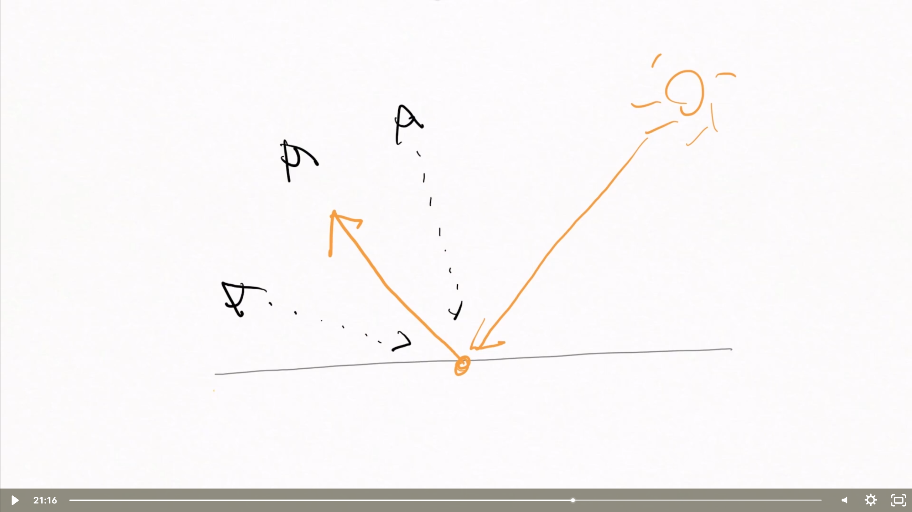

DirectX 11 — Phong Specular Reflection Vector [Raytracing]
GPU COMPUTE PIPELINE
WebGPU 미지원 브라우저
현재 브라우저가 WebGPU를 지원하지 않거나 활성화되지 않았습니다. Chrome, Edge, Opera 최신 버전 또는 Safari 기술 미리보기를 사용해 주세요.
수학적 정의 (Phong Specular)
// 반사 벡터 수식
reflectDir = 2*(n · l)*n - l
// Phong Specular 계산
specular = pow(max(dot(-rayDir, reflectDir), 0), alpha)
Sphere Properties
Shininess (Alpha)
9.0
Specular Intensity (ks)
0.8
Radius
0.5
Center Z
0.5
Light Properties
Light Pos X
0.00
Light Pos Y
0.00
Light Pos Z
-1.00
Material Colors
Diffuse Color (diff)
Specular Color (spec)
Ambient Color (amb)
이론 참고도

반사 벡터 r = 2(n·l)n - l 과 시야 벡터 v